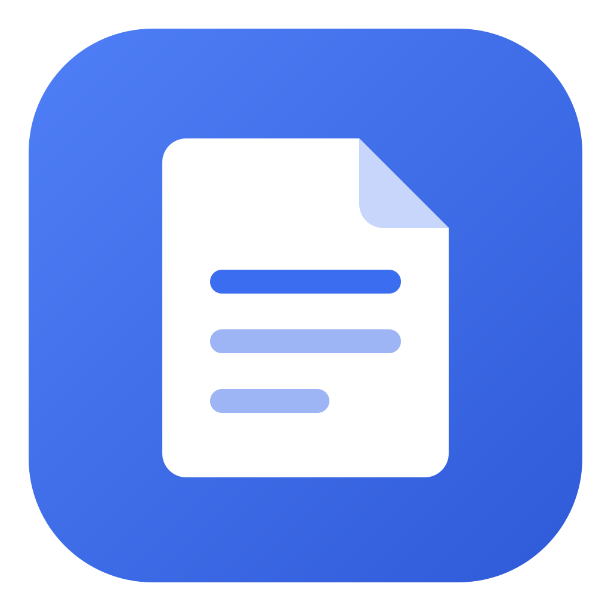

Memoir
A fast, private notebook for Windows. Your notes are encrypted on your computer and kept in your own Google Drive — readable by you, and nobody else.
What it does
- Folders and notes, with a simple editor: headings, lists, checklists, tables, images and attached files.
- Replies under a note, a "Later" list with due dates, full-text search and note history.
- Works offline. Changes sync between your computers through your Google Drive.
- Bring your notes over from Evernote, and export everything to plain Markdown files at any time.
Private by design
Everything is encrypted on your device with a key protected by your passphrase, before it leaves your computer. Google Drive only ever stores encrypted files. Memoir has no servers and no accounts; there is nothing for us to see.
Memoir asks Google for the narrowest access it offers (drive.file): it can see only the files it creates itself, in a Memoir folder — nothing else in your Drive.
Your notes stay yours
The file format is documented, and a small recovery tool turns a copy of your Memoir folder back into Markdown files with your passphrase or recovery key — even without the app.